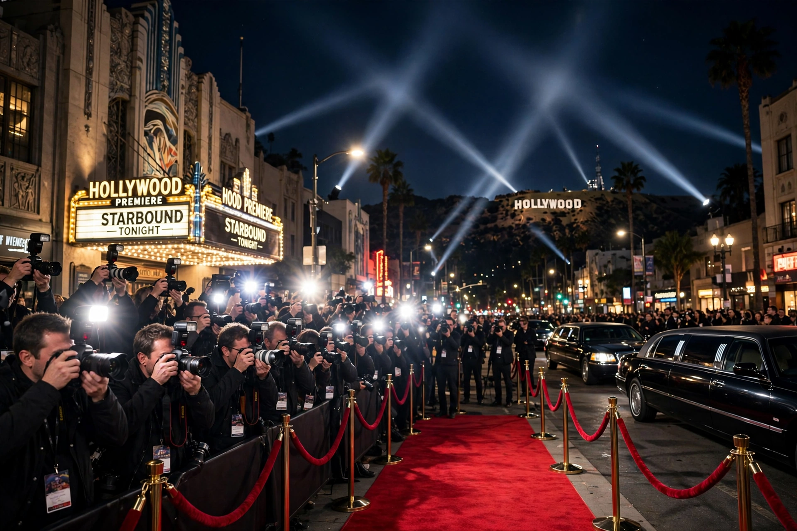

| Awards season (film) | |
|---|---|
 | |
| Period | Approximately November – February/March (Northern Hemisphere winter) |
| Major ceremonies | Golden Globe Awards, Critics' Choice Awards, BAFTA Awards, Screen Actors Guild Awards, Academy Awards |
| Culmination | Academy Awards (Oscars) |
The film awards season is an annual period, roughly from November through February or early March, during which the film industry's major awards are presented and studios campaign for their films to win them. The season culminates with the Academy Awards (the Oscars), and includes the Golden Globe Awards, the Critics' Choice Awards, the British Academy Film Awards (BAFTAs), the Screen Actors Guild Awards, and the various guild and critics' prizes that precede them.
The season effectively begins with autumn film festivals — Venice, Telluride, Toronto, and New York — where likely contenders premiere in late August through October. Critics' groups announce awards in December; the Golden Globes and Critics' Choice Awards follow in January; guild awards (SAG, DGA, PGA, WGA) and the BAFTAs come in February; and the Academy Awards close the season in late February or March. Television has an analogous cycle centered on the Primetime Emmy Awards, traditionally held in September.
Studios and specialized awards consultants run extensive campaigns: screenings and Q&A sessions for voters, trade-paper advertising ("For Your Consideration" ads), talent interviews, and festival positioning. Films hoping for awards are often given limited releases late in the calendar year to qualify and to stay fresh in voters' minds — a pattern known as an Oscar-bait release strategy. Consultants such as the late Tony Angellotti and, historically, Harvey Weinstein, became famous for reshaping campaign tactics in the 1990s.
Awards season has been criticized for favoring certain genres (prestige drama and biopics), for the cost and negativity of campaigns, and for historical under-representation of women and minority artists, which prompted campaigns such as #OscarsSoWhite (2015–16) and subsequent Academy membership reforms.